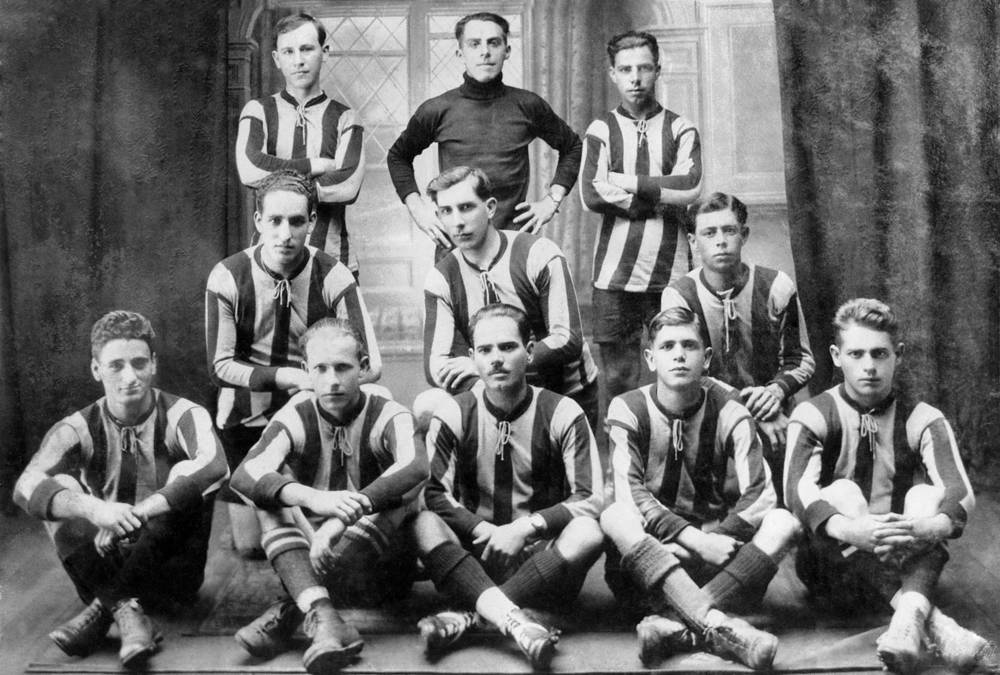

Back |
Home |
Next
--- HISTORIA ---
La fundación de nuestro Club
En la ciudad de Heredia, a las doce horas del día doce de Junio de 1921- reunidos los infrascritos y tomando en consideración la falta, muy sentida por cierta, de que esta ciudad cuente con un centro deportivo que, asocie a todos los elementos deportivos y demás personas conscientes de la función social que desempeña la cultura física de la juventud, acuerdan constituir una asociación que se denominará “CLUB SPORT HEREDIANO”.
Un Club Triunfador
Desde su fundación en 1921, el Club Sport Herediano logró saborear triunfos tras coronarse como el primer campeón nacional del fútbol costarricense, logró cosechado en 1921.
Además, logró adjudicarse el título de manera consecutiva, convirtiéndose en el primer bicampeón de Costa Rica. En la década de 1930 sumó una seguidilla de cuatro títulos entre 1930 y 1933, logrando el honor de coronarse como el primer club tetracampéon.
El protagonismo no solo lo logró a nivel nacional sino que sobrepasó las fronteras, logrando grandes presentaciones internacionales que lo llevaron a denominarse como el Club de las grandes jornadas internacionales.
Clubes de la talla del Banfield de Argentina, Sevilla de España, Gornick de Polonia, Rapid de Viena de Austria, Peñarol de Uruguay, Vasco de Gama de Brasil, entre otros equipos, se fueron vencidos en una época de oro por el Club Sport Herediano.
“Según lo narra don Fernando Naranjo en su libro ”Historias Deportivas del Siglo XX, la utilización de los colores rojo y amarillo como distintivos del Club se dio en el año de 1926, cuando el Club Fortuna de Cuba vino por segunda vez al país. Su empresario estaba interesado en montar un encuentro con el Herediano, el mejor equipo en aquel momento. Pero Había el inconveniente que el Club no tenía un uniforme apropiado que correspondiera a la talla internacional del evento. La solución la encontraron en el almacén El Siglo Nuevo de don Ramón Herrero, español que habia importado unos uniformes con los colores rojo y amarillo desde su país, para ser utilizados por el equipo de la Sociedad Gimnástica Española, al que pertenecía una buena parte de la colonia en Costa Rica. Sin embargo, como no hicieron efectiva la compra, Toquita Gutiérrez concreto el trato.
En ese partido contra el Fortuna, el Herediano cosechó además del triunfo 6 a 2, también la suma de quinientos colones, con la que se saldo la deuda de los uniformes.” (Club Sport Herediano, 90 años de Historia)
--- Primer Equipo 1921 ---
